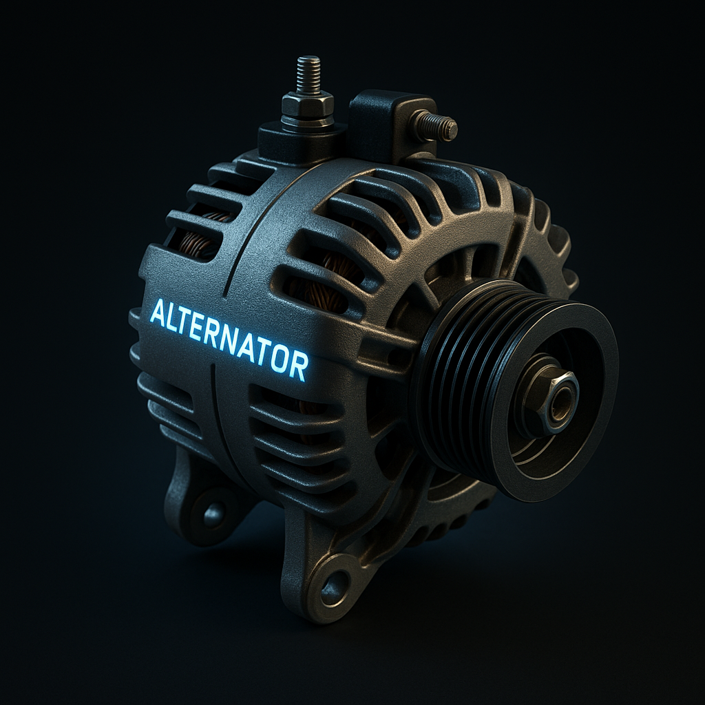
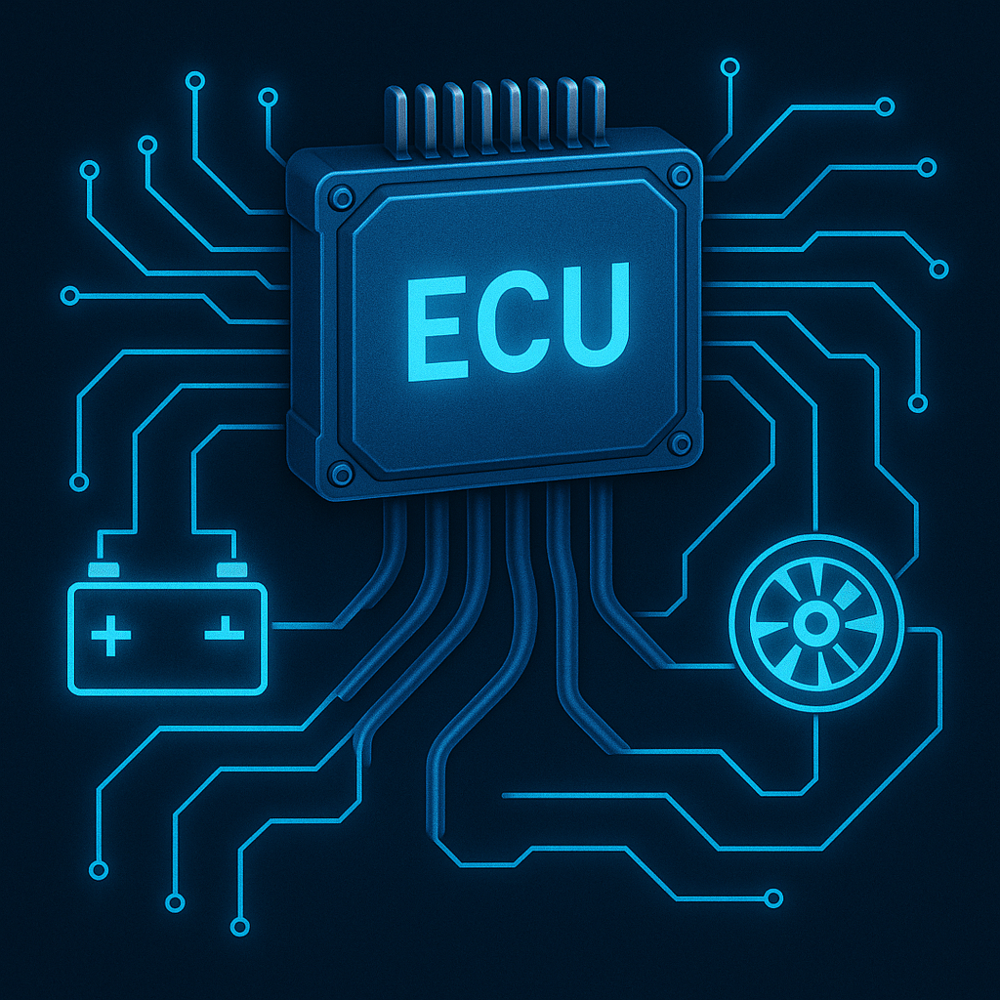

Electrical System
The electrical system powers everything in your car that isn’t mechanical — from starting the engine to keeping the lights, gauges, and ECU running. It’s like your car’s nervous system and power grid combined. Every time you turn the key, press a button, or even run your headlights — the electrical system is working behind the scenes.
Battery

The battery stores electrical energy and provides power when the car is off or starting up. It gives the initial burst of energy needed to start the engine and power accessories like lights, locks, and the radio. Think of it as your car’s rechargeable power bank.
Alternator
Once the engine is running, the alternator takes over. It uses the engine’s rotation (via a belt) to generate electricity, recharging the battery and powering all the electrical systems. Without the alternator, the battery would die quickly even if you’re driving.
Starter Motor

This little motor uses battery power to crank the engine — basically turning it fast enough to start the combustion process. After the engine starts running on its own, the starter disengages. You can think of it like the “push” that wakes the engine up.
ECU (Engine Control Unit)
The ECU is the brain of modern cars. It’s a small computer that monitors and controls everything. It constantly makes adjustments in milliseconds to keep the engine running smoothly and efficiently. The ECU is also where tuning happens — by changing software maps, tuners can adjust how much fuel, air, and boost your engine uses for more performance